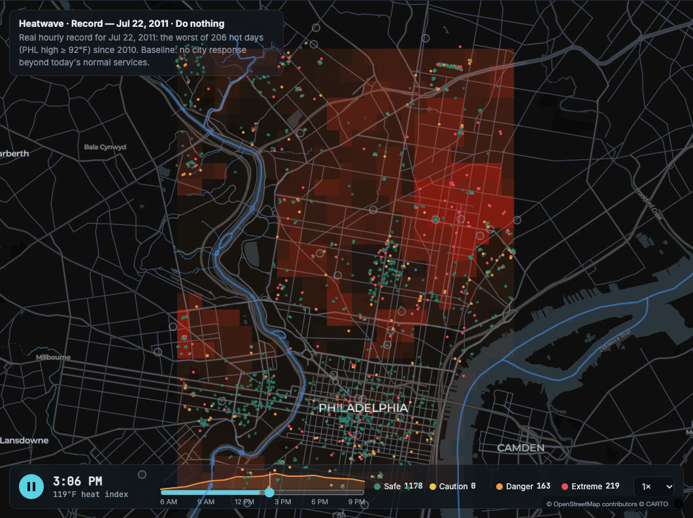
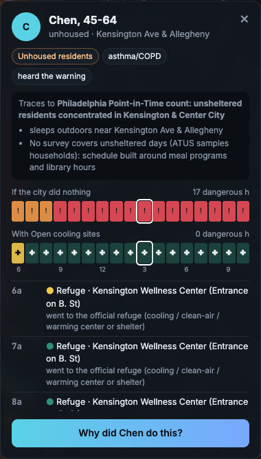
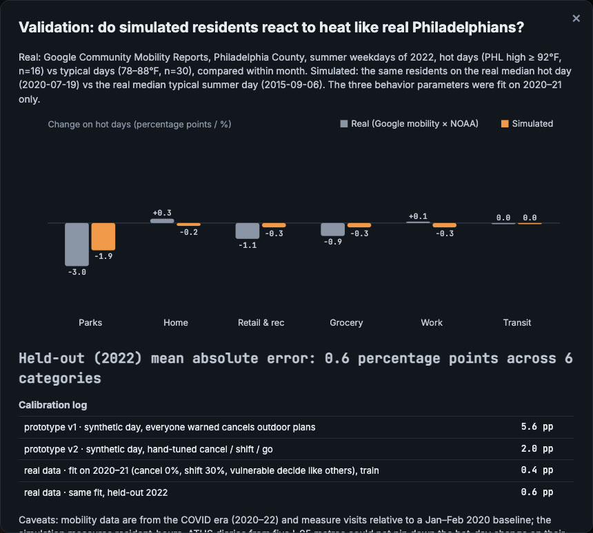

Philly's worst days, replayed.
Swelter replays real heat waves, smoke days, floods and cold snaps hour by hour for 1,560 synthetic Philadelphians, so a planner can see whose dangerous hours a city response takes away.
Open the live mapFour hazards.

Each hazard has three levels, and each level is a day Philadelphia lived through: the median event since 2010, the 95th-percentile day, and the worst on record. The hours come from NOAA's station at the airport and the EPA's air monitors.
- Heat Jul 22, 2011 119°F heat index
- Smoke Jun 7, 2023 AQI 500
- Flood Jul 28, 2013 6.0 in of rain in 3 h
- Cold Jan 7, 2014 −18°F wind chill
No AC, eleven hours of danger.
On the record heat day, residents of homes without AC spent 11.1 hours in dangerous heat. Opening the city's 31 real cooling sites cut that to 9.5; free SEPTA rides to them, to 9.4. Who has AC comes from the EIA's housing survey, by income.
Click anyone. Ask why.
Every dot is a person whose weekday is a real diary from the American Time Use Survey. Chen is unhoused and sleeps near Kensington and Allegheny: 17 dangerous hours outside if the city does nothing, none once cooling sites open. The why button asks a language model to explain the choice in plain words.

Six inches in three hours.
On July 28, 2013, the rain gauge at the airport caught 6.0 inches in three hours. People living inside FEMA flood zones faced 4.8 dangerous hours; shelters outside the zone cut that to 3.3.
Hours of danger, taken away.
- 7.9hours fewer for unhoused residents on the record cold day, with outreach to 24-hour sites
- 7.3hours fewer for unhoused residents on the record smoke day, with an N95 giveaway
- 7.2hours fewer for outdoor workers on the record cold day, with an early Code Blue
- 4.0hours fewer for unhoused residents on the record heat day, with cooling sites open
- 3.1hours fewer for outdoor workers on the record heat day, with an early heat alert
Checked against real trips.
How much people cancel, shift or stay home on a bad day is fitted to Google's mobility data for 2020 and 2021, then tested on 2022, a year the fit never saw. The simulated change lands within 0.6 percentage points of the real one on average, across six kinds of trips.

From public data only: NOAA weather at PHL, EPA air monitors, satellite smoke plumes, time-use diaries, Census ACS, the EIA housing survey, CDC PLACES, FEMA flood zones, the city's cooling sites, OpenStreetMap and Google mobility.